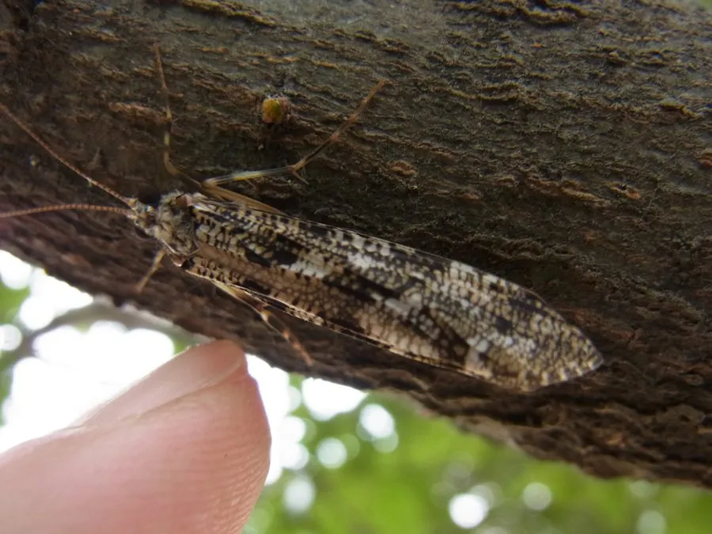

昆虫 · 动物界
石蛾 Stenopsyche marmorata

幼虫用沙粒和植物碎屑筑巢、生活在清澈溪流中的昆虫，成虫外形似蛾，是水质清洁的重要指示生物。
- 分类
- 门节肢动物门纲昆虫纲目毛翅目科石蛾科属石蛾属
- 栖息环境
- 清澈、溶氧充足的山区溪流，幼虫在水底筑巢生活
- 地理分布
- 亚洲东部，中国山区溪流中常见
- 保护级别
- 暂无评估
物种志
石蛾成虫体长 15–20 mm，外形像蛾，翅面有褐色斑纹，停息时翅膀呈屋脊状盖在背上，触角长而多节。它的翅膀上长着细毛而不是鳞片，这是毛翅目与蛾类的重要区别。
石蛾分布于亚洲东部，中国山区溪流中常见。幼虫生活在清澈、溶氧充足的溪流中，用沙粒、小石子和植物碎屑黏结成巢筒，藏在巢中，头部和足伸出巢外取食。不同种类的石蛾幼虫会使用不同的材料筑巢，巢的形状也各不相同。幼虫对水质污染非常敏感，是水质清洁的重要指示生物；如果溪流中石蛾幼虫种类丰富，通常说明水质良好。成虫多在水边活动，寿命较短，主要任务是繁殖。目前它没有IUCN 的正式评估，中国未将其列入国家重点保护野生动物名录。
形态与习性
- 食性幼虫取食藻类、植物碎屑和水中小型有机物
- 体长成虫 15–20 mm
- 幼虫筑巢用沙粒、小石子和植物碎屑黏结成巢筒
- 水质指示幼虫对污染敏感，是水质清洁的指示生物
- 栖息环境清澈、溶氧充足的山区溪流
- 成虫寿命成虫寿命较短，主要任务是繁殖
趣味知识
- 石蛾幼虫用沙粒和碎屑给自己建造一个可移动的“小房子”。
- 幼虫对水质要求很高，出现大量石蛾说明溪流水质清洁。
- 石蛾的成虫外形像蛾，但翅膀上长着细毛而不是鳞片。